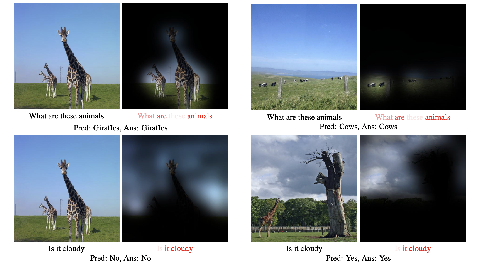

This is all you need to understand "Attention Is All You Need"(多分) 準備
2025年6月18日
概要
この記事では、タイトルの通りTransformerモデルのオリジナルの論文である"Attention Is All You Need"を この記事で完結できるような形で噛み砕いでいくことを目指します。準備、とかいたのは、脱線したりなんかしてしまって 長くなりそうなのでこの記事ではまだ読み始まりません。 一本めの記事なのでいろいろ目をつぶって下さい。。。
Transformerとは
今となってはChat GPTなんかですっかり実用化されてしまっていて 技術的にはすっかり身近なものになってしまっているTransformerモデルです。そのTransformerモデルが 最初に提唱されたのは2017年のGoogle研究者による"Attention is All You Need"という論文でした（Vaswani et al., 2017）。 自分たちの論文が世間に、界隈に大きな影響を与えることがわかっていたかのような(というかわかっていたのでしょうが)洒落たタイトルの論文ですね。
この論文のすごいところは、アイデアとしては元から存在していた"Attention"という考え方を、 とにかく高速で計算できるようにしました、という単純風なものであるところにあると思っています。 この論文には難しい数式も全然出てこないし、何となくわかった気になるのは正直全然難しくないんですが、 それがChat GPTなどの生成AIのようなとんでもない性能を持つ奴らのバックグラウンドであると思うと頭がバグります。 GPT(Generative Pre-trained Transformer)系の生成モデルはその名前の通りTransformerモデルをベースにしていて、 厳密にいうとdecoderモデルなんかと呼ばれる原著論文とはちょっと構造が違うものにはなるのですが、 そのアイデアは基本的に同じで、この論文を読んだ後にはTransformerモデルの強力さに慄いてしまいます。 ちなみに原著論文でのTransformerモデルはencoderとdecoderの2つの部分から構成されていて、その違いは 原著論文では機械翻訳での応用を想定していたところにあります。
ちなみに自然言語処理という分野では従来は構文解析だったりなんだりといった ルールベースのアプローチが行われてきていたと思うのですが(あんまり僕がそこに明るくないのでわからないですが)、このモデルができてしまったことによりとりあえずTransformerに投げて仕舞えばいいじゃないかという 風潮はやはりあるようで、大学の自然言語処理関連の授業はこの部分の技術革新の打撃(というと響きが悪いですが)を受けて かなり内容に迷いが出ているように見えています。
Attention
まずはこのモデルの中核となっている"Attention Mechanism(注意機構)"について。 この"Attention"という仕組みは前述の通りこの論文の前から存在していたもので、 アイデアとしてはその言葉のまんまの解釈にかなり近いです。 その"注意を向ける"ということを、 「要素集合の現在の関心に基づく重みづけ」として実現するわけです。
pixel attribution
少し話がそれますが、個人的にすげえと思ったAttention関連の図を紹介したいです。VLM(Vision Language Model)という分野になるんでしょうか。 ある質問が入力された時に画像の各領域にそれぞれどれくらいの注意が向けられているかを可視化したものです。 Dosovitskiyらの論文（arXiv:1804.00775）の中の図です。
この図から、この動物は何か？という質問が来た時には明らかに動物の部分に注意が向けられていて、曇りか？と聞かれた時は 空の部分に注意が向けられていることがわかります。そのPrediction Taskもしっかりと正解していますね。 これはめちゃめちゃうまくいった例なのかもしれませんが、初見ではかなり感動しました。この論文は全然ちゃんと読んでないんですけどね。
では改めてAttentionの具体的な理屈について。
Attentionを計算する際の入力は集合になります。具体的な式の説明は先ほどのVLMの話を交えた方がわかりやすそう?だと思ったので、
その方向性でいこうと思います。
まず画像には各領域にベクトル\( \mathbf{z}_i\)が特徴として対応していて、問が\( q \)というQueryベクトルとして表現できるとします。 この時にある関数\(r\)を用いて
\[ r_i = r(\mathbf{z}_i, q) \]というものを定義し、それを正規化します。 \[ a_i = softmax(r_i) = \frac{e^{r_i}}{\sum_{j} e^{r_j}} \]
これが前述の"重み付け"になります。何となくお気持ちは伝わったでしょうか。
Token
これに加えて"Attention is All You Need"を読むにあたって必要な知識は、入力列が"トークン"と呼ばれるベクトル列により表現されているということぐらいだと思います。 ここでいうトークンはWord2Vecを例に実験してみると理解しやすいでしょう。Word2Vecとはその名の通り単語をベクトルに変換したもので、似たような単語は その空間で近い位置に配置されるようになっています。今のTransformerモデルでは必ずしもその入力トークンは単語区切りとなっていないようで、 その手法はもっと複雑になっているのだとは思いますが、基本的な考え方は似ているんじゃないかと思います。
そのWord2Vecでは、King - man + woman = queenとなるという話が有名なので実験してみました。以下にコードを貼っておくのでColabなどで興味があればいろいろ実験してみて下さい。
!pip install gensim
import gensim.downloader as api
model = api.load("word2vec-google-news-300")
#king - man + woman
result = model.most_similar(positive=["king", "woman"], negative=["man"], topn=10)
print("Top 10 (king - man + woman):")
for word, similarity in result:
print(f"{word}: {similarity:.4f}")
出力は以下の通りです。
Top 10 (king - man + woman):
queen: 0.7118
monarch: 0.6190
princess: 0.5902
crown_prince: 0.5499
prince: 0.5377
kings: 0.5237
Queen_Consort: 0.5236
queens: 0.5181
sultan: 0.5099
monarchy: 0.5087
ほんとにQueenがトップに出てきました。こりゃすごいですね。Word2Vecは今は少しずつ下火になってきている技術なのかもしれませんが 初見の面白さがあるので好きです。
ところで、このWord2Vecというのは元々のモチベーションではスパムメールの検出などがあったのではないかと勝手に思っています。 例えば、「振り込め」という単語を目印にして弾く、というシステムでは「お金」と「送る」とかなんかがあった時には 人間が見たら明らかに詐欺だけれども機械は認識しないということになりますが、 Word2Vecを用いて小規模のニューラルネットを噛ませたりなんかすれば結構簡単に検出できたりするのではないですかね？ わかんないけど。
いろいろ脱線してしまっていたらまあまあ長くなっていたので記事を分けます。見返してみたらめっちゃ日本語だらけで読みにくいなと。 結構書くのは難しいもんなんだなあと感じています。。。あんまたらたら書くと記事のコンセプトからずれそうなので、簡潔に 論文の内容を書きたいですね。